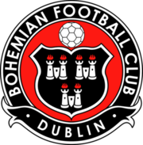

Information Regarding Clubs
Top Present-Day Clubs
 At this moment, there are numerous world class clubs performing at the highest level. Some teams that can be considered for this bracket are Real Madrid, Icasa CE, Napoli, Bohemian FC, and Bayer Leverkusen. Generally speaking, the best performing clubs in terms of metrics also attract the most dedicated fanbases, the few that I have mentionoed are among the top globally, and with no signs of their streaks waning off in the immediate future they will only continue to grow. Soccer, as it stands is a sport of intense devotion, beloved the majority population of countries the world over, it's influence is immense in nearly all facets of entertainment, media, daily living, and sensibility.
Most Successful
 Although some teams may not be performing at their peak at this moment in time, it does not diminish their historical success. Some of the greatest winners in the sport include Manchester United, Real Madrid, Juventus, Bayern Munich, and AC Milan.
Although some teams may not be performing at their peak at this moment in time, it does not diminish their historical success. Some of the greatest winners in the sport include Manchester United, Real Madrid, Juventus, Bayern Munich, and AC Milan.
Club Records
 With these great teams, the records are sure to follow them. Some of the greatest club records include Manchester United winning the first English treble, Real Madrid winning the Champions League 3 years on the bounce, and Bayer Leverkusen's unbeaten title victory.
With these great teams, the records are sure to follow them. Some of the greatest club records include Manchester United winning the first English treble, Real Madrid winning the Champions League 3 years on the bounce, and Bayer Leverkusen's unbeaten title victory.